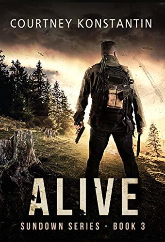

The First Days
Rhiannon Frater
The First Days
Rhiannon Frater |
|
 World Departed
Sarag Lyons Fleming
World Departed
Sarag Lyons Fleming |
|

Alive
Countney Konstantin |
|
 ROT & RUIN
Jonathan Maberry
ROT & RUIN
Jonathan Maberry |
|
 Against The Machine evolution
Brain Van Norman
Against The Machine evolution
Brain Van Norman |
About Us
Our Story
At Book Review, we're passionate about books. Our journey began with a love for literature, and we wanted to create a space where fellow bookworms could come together, share their thoughts, and discover new reads. Whether you're a casual reader or a dedicated bibliophile, we have got something for you.
What We Offer:
Book Review: Dive into our extensive collection of book reviews across genres. From thrillers to romance, fantasy to non-fiction, we've got you covered.
Author Spotlights: Get to know the faces behind the words. Our author spotlights feature exclusive interviews, writing tips, and behind-the-scenes glimpses.
Book Recommendations: Looking for your next read? Our curated recommendations will lead you to captivating stories you might have missed.
Reader Discussions: Join our lively discussions on favorite characters, plot twists, and book-to-movie adaptations. Your insights matter!